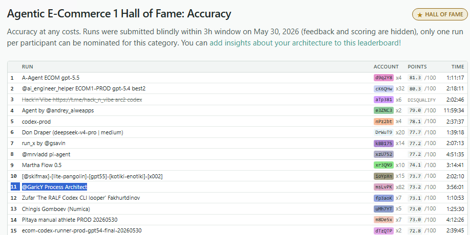

Локальные правила запуска и точный формат финального ответа.
BitGN ECOM1 / business process execution
Process Architect
BitGN ECOM1 — это симуляция операционной системы e-commerce бизнеса. Система автоматизирует back-office процессы магазина. Вместо монолитного промпта — карта бизнес-процессов, которая версионируется как код.
Accuracy
11-е место
Hall of Fame
Ultimate
15-е место
Hall of Fame
Score
73.2/100
официальный слепой PROD
Postmortem
93.5/100
после работы над ошибками и одного раунда эволюции
Соревнование
Что такое BitGN ECOM1
BitGN Agent Challenge - серия соревнований, где автономные агенты решают задачи внутри детерминированных симуляций реального бизнеса. Выпуск ECOM1 посвящен операционной системе интернет-магазина: агент ищет товары, проверяет остатки, собирает корзины, проводит checkout, восстанавливает 3DS-платежи, разбирает возвраты и прикладывает ссылки-доказательства.
Среда устроена как Unix-подобная система. На верхнем уровне
изолированы: /AGENTS.md (локальные правила),
/docs (политики бизнеса), /proc
(состояние магазина) и /bin (разрешенные утилиты).
Агент должен вывести доменное знание из этого живого мира.
Политики: безопасность, скидки, возвраты, 3DS, crosslist.
Состояние бизнеса: товары, магазины, корзины, платежи, сотрудники.
Разрешенные утилиты, которыми агент действует и проверяет факты.
Оцениваются outcome, message, refs и фактические изменения состояния.
1
Задача
Пользователь просит выполнить операцию магазина или создать артефакт.
2
Действия агента
Агент читает правила, политики и записи бизнеса, затем действует через инструменты.
3
Финальный ответ
outcome, текст ответа и refs на доказательства.
4
Score
Грейдер проверяет наблюдаемый результат: состояние, формат и ссылки.
DEV
На DEV виден score, поэтому можно читать трейсы и эволюционировать процессы.
blind PROD
В зачете PROD заранее не виден, а во время прогона нет task-level feedback.
Примеры задач
Запросы выглядят как обычная работа магазина
Запросы поступают в естественном виде: с нечеткими названиями, исключениями, чужими кодами и скрытыми требованиями к формату ответа. Агент должен следовать правилам, которые разбросаны по инструкциям, политикам и данным бизнеса.
Do you have 8 of 'bosch gex 125 accessory set with discs' (but not PT-SND-BOS-GEX125-DUST) in stock in alpenstrasse tools place?
В одной фразе: нечёткое название товара, исключение, нечёткое
название филиала и порог количества. Ответ: OUTCOME_OK, FALSE(2)
и refs на магазин, товар и policy.
Read the uploaded competitor purchase request OCR at /uploads/..._ocr.txt and create a TSV crosslist report at /exports/crosslist-....tsv.
На входе зашумленный OCR чужой заявки. На выходе готовый TSV: сопоставленные SKU, остатки, причины дефицита и refs. Этот пример разбирается ниже как работа агента под капотом.
Результаты
Официальный зачет и postmortem
Официальный слепой PROD принес 11-е место (Accuracy). Подход с картой процессов доказал свою состоятельность, однако оценку снизили досадные ошибки реализации: один логический баг (стоивший 5-7 баллов), слишком глубоко спрятанный контроль prompt injections и шероховатости в сборке финального ответа (refs).
Postmortem-запуски демонстрируют, на что архитектура способна без этих недочетов. Исправление ошибок и чистая адаптация к PROD дали результат близкий к призёрам. А запуск всего одного раунда PA-эволюции — возможности, которой не было в слепом окне, — вывел систему на уровень 93.5/100.
Hall of Fame
73.2/100
Официальный слепой PROD: Accuracy 11-е, Ultimate 15-е.
Postmortem DEV
54.8/55
Рефакторинг и работа над ошибками в DEV.
Адаптация к PROD
80.8/100
Если бы в коде не было ошибок.
Postmortem PROD eval
93.5/100
Один раунд эволюции.

Работа агента под капотом
Как агент разбирает скан заявки и создает отчет
Современный агент способен выполнять полноценный back-office процесс в живой бизнес-системе. На входе — зашумленный скан чужой заявки (competitor codes), на выходе — готовый TSV-отчет с расчетом дефицита на основе политик.
TOOLHAUS PROCUREMENT
OCR source
PowerTools target branch: PowerTools Innsbruck Ost
- 9 CMP-HMQOZL - Makita DDF485 LXT drill kit 2x5.0Ah
- 2 CMP-TEPQ3I - Einhell GE-CM 36/36 Li mower body
- 7 CMP-HMW8GB - Einhell mower kit 2x4.0Ah
- 8 CMP-3CESSM - 3M safety glasses, protection_type=face
- 7 CMP-7GZLDR - Bosch GEX dust-control bundle
- 9 CMP-J9BSXK - DeWalt compact circular saw
Memo: competitor codes are not PowerTools SKUs.
01
Read
Открывает OCR и /docs/purchase-request-crosslist.md.
02
Resolve branch
Находит /proc/locations/Innsbruck/store-innsbruck-ost.json, is_open=true.
03
Match products
Не принимает competitor codes за SKU, сверяет описание и каждое свойство.
04
Write artifact
Считает available_today = max(on_hand - reserved, 0) и пишет TSV.
Строка 4
3M safety glasses: property_mismatch
В OCR указано protection_type=face, а в каталоге для найденного товара eye. Policy запрещает подстановку похожего товара, поэтому строка идет в отчет без SKU и с нулевым fulfillable quantity.
| line | match_status | matched_sku | available | short |
|---|---|---|---|---|
| 1 | exact | PT-DRL-MAK-DDF485-5AH | 0 | 9 |
| 4 | property_mismatch | - | 0 | 8 |
| 5 | exact | PT-SND-BOS-GEX125-DUST | 2 | 5 |
{
"message": "/exports/crosslist-FAzYcprq.tsv",
"outcome": "OUTCOME_OK",
"refs": [
"/uploads/278ma7TR_competitor_purchase_request_ocr.txt",
"/docs/purchase-request-crosslist.md",
"/proc/locations/Innsbruck/store-innsbruck-ost.json",
"/proc/catalog/...matched-products.json"
]
}Зачем нужен Process Architect
Если агент уже умеет работать, его процессы нужно поддерживать
Если агент уже умеет делать операционную работу, возникает проблема поддержки: как обновлять инструкции, когда схемы БД, форматы и бизнес-правила меняются? Решение — декомпозиция. Инструкции разбиты на immutable-версии процессов (process units), а Process Architect анализирует провалы и выпускает новые версии.
Версионированные инструкции: checkout, returns, 3DS, refs, submission_terminal.
Выбирает нужные версии под задачу и прикладывает attention, если политика или инструмент изменились.
Решает задачу по отрендеренному мануалу и текущим данным бизнеса.
Анализирует провалы и изменения правил, пишет новые immutable-версии процессов.
World refresh
Процессы догоняют изменившуюся среду
Это тяжелая миграция, которую запускают при радикальном изменении среды: например, перед переносом из DEV-песочницы в слепое PROD-окно. Process Architect сравнивает текущие инструкции с новой средой: какие документы появились, какие файлы переехали, какие утилиты исчезли или сменили контракт. PA работает не с общим changelog, а с подсвеченными diff-фрагментами рядом с теми process units, которых они касаются.
+ /docs/purchase-request-crosslist.md
+ /docs/availability-checks.md
- /proc/baskets/<id>.json
+ /proc/carts/<id>.json
- /bin/payments refund
+ /bin/refund close
- /bin/sql
+ read live /proc JSON/docs/purchase-request-crosslist.mdnew domain/proc/baskets -> /proc/cartsbasket lifecycle/bin/refundreturns/AGENTS.mdterminal protocol
Не затронутые юниты остаются без текстового патча: меняются только dependency hashes, чтобы resolver не считал их устаревшими.
+ New domain: competitor-OCR crosslist TSV
+ exact match: description + every spec
+ competitor codes are not PowerTools SKUs
+ fixed report schema
+ fixed match_status / reason strings
+ availability = max(on_hand - reserved, 0)
bp_index v0009
routing rebuilt
Добавил новые маршруты: availability/inventory, dispatch planning и purchase-request crosslist.
bp_basket_lifecycle v0006
schema moved
Переехал с /proc/baskets на /proc/carts и убрал SQL из процесса.
bp_submission_terminal v0010
no content change
Текст процесса не менялся: PA только пере-привязал dependency hash к обновленному /AGENTS.md.
Attention
Политика изменилась - агент получает сигнал
Attention - легкая подстройка на лету, без пересборки всего мануала.
Оркестратор сверяет текущие файлы с базлайном по sha256-хэшам, а
Resolver собирает точный dependency-aware diff для затронутого
процесса. Если /docs/payments/3ds.md меняет лимит
попыток с 2 на 3, Executor видит Heads-up прямо внутри
payments_3ds_recovery и действует по актуальной policy.
@@
In this workspace, a 3DS session allows up to
-2 attempts.
+3 attempts.
Фрагмент процесса payments_3ds_recovery.md
Heads-up внутри процесса
Этот процесс мог устареть: файлы, против которых он был написан, изменились. Если текст процесса расходится с актуальной policy, агент доверяет актуальной policy.
Ниже идут обычные проверки 3DS recovery, но лимит попыток уже берется из обновленного документа.
Перед вызовом инструмента восстановления агент проходит gate trace: проверяет право пользователя, состояние корзины, состояние платежа, новый лимит попыток и только потом делает mutating action.
- 1identity match
- 2payment
requires_3ds_action - 3basket
checked_out - 4
attempts 1 < max_attempts 3 - 5
3ds-status2recoverable - 6
/bin/payments recover-3ds - 7post-state checked
В успешной задаче t083 финальный ответ уже использовал обновленное правило: "1 of 3 attempts used". Score: 1.0.
PA-fix
Маленький patch в правильном слое
PA-fix - это эволюция после ответа грейдера: когда уже есть score,
сообщение об ошибке и лог действий агента, Process Architect ищет владеющий слой и
выпускает новую immutable-версию процесса. В одной задаче агент
должен был ответить yes/no в формате, заданном текущими правилами
запуска. Он вернул старый токен TRUE(1), а грейдер ждал
ja. Проблема была не ошибкой нейросети, а архитектурной
недоработкой: правила финальной отправки просочились в routing
index. Маршрутизатор bp_index захардкодил старый токен
ответа, в то время как форматированием должен управлять только
терминал отправки, читающий актуальный /AGENTS.md.
Что сломалось
Answer should be "ja"
Эмитнулся TRUE(1). Это не частный немецкий случай: любой yes/no token должен читаться из live /AGENTS.md.
Диагноз
terminal_protocol leak into bp_index
bp_index должен выбирать процесс и outcome, а не хранить literal финального ответа.
Владелец
submission_terminal
Формат финального ответа принадлежит terminal-юниту, который читает актуальные правила перед отправкой.
@@
- ... live /AGENTS.md styling, including the TRUE(1)/FALSE(0) yes/no token.
+ ... live answer styling from /AGENTS.md at submit time;
+ this index does not restate the literal token.
+ Never assume a fixed yes/no token: it is whatever live /AGENTS.md
+ currently specifies and is locale-specific./AGENTS.mdисточник live token
bp_submission_terminalформатирует финальный message
bp_indexмаршрутизирует к процессу и outcome
Как устроено внутри
Процессы можно поддерживать как код
В проекте нет набора хардкодов под конкретные задачи. Есть короткие инструкции для классов операций, механизм выбора нужных инструкций под задачу и отдельный агент, который выпускает новые версии, когда правила или поведение оказываются неверными.
Небольшая инструкция для одного класса операций: checkout, возвраты, 3DS, refs, формат ответа.
Выбирает, какие инструкции нужны для конкретной задачи, и прикладывает предупреждения об изменившихся политиках.
Решает задачу по выбранному мануалу: читает файлы, вызывает инструменты, проверяет состояние после действия.
Разбирает провалы и изменения среды, затем выпускает новую immutable-версию инструкции с diff и rationale.
Обновление среды
Когда меняются политики, утилиты или схема данных, resolver сначала
подсвечивает это исполнителю, а Process Architect затем обновляет
затронутые инструкции. Фикс не переписывает историю: появляется
новая папка vNNNN/ с manifest, diff, rationale и rollback.